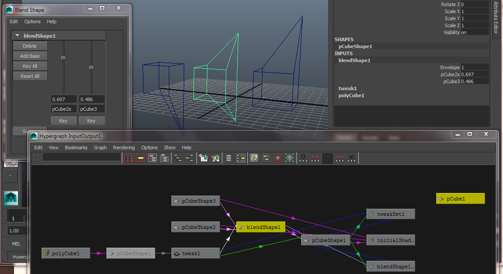
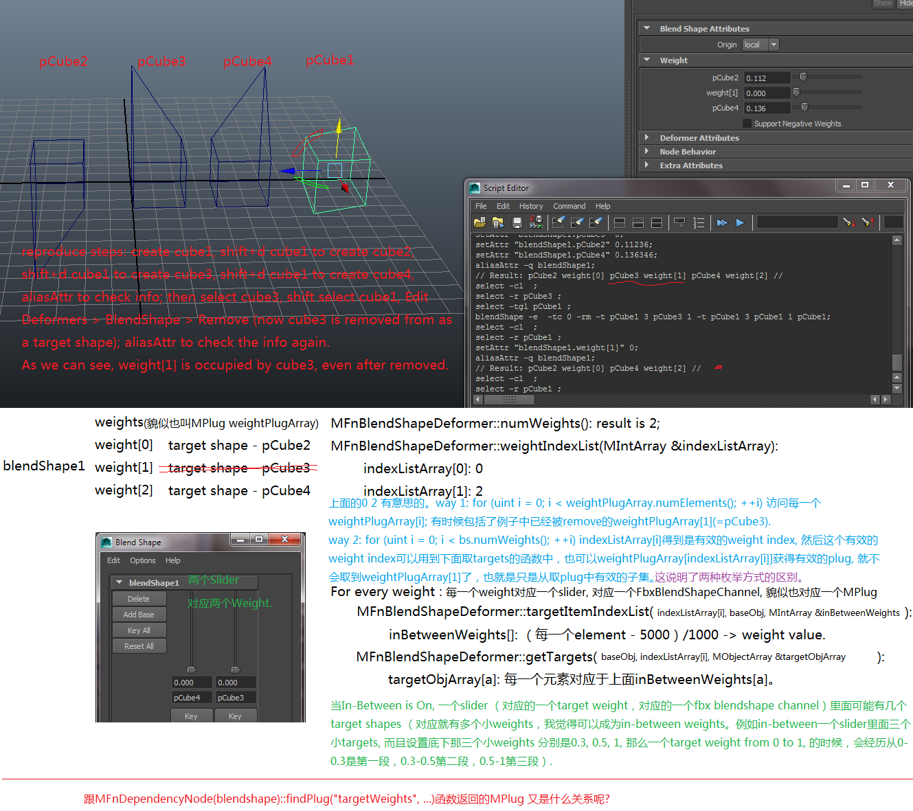
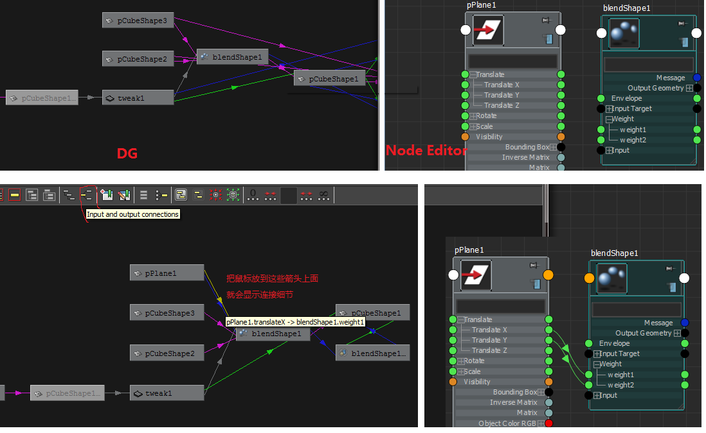

最近接触了一点maya blendshape programming, 稍微记录一下。
BlendShape deformer basis (基础)
先说明一个特点，当drag一个cube or sphere物体的时候，会生成
To create a simple blendshape example,
Polygon mode, create a cube, we have
Select cube1, Shift+D, we have
Select cube1, Shift+D, we have
Select cube3 first, then shift+select cube2, then shift+select cube1,
Animatioin mode, menu Create Deformer > BlendShape (Deformation order == Default), we have a blendshape deformer node, for example called blendShape1.
cube1 is called source shape for this blenshape.
cube2 and cube3 are as target shapes for this blendshape.
select cube1, menu Windows > Connections, we see the connections of these nodes.

Maya/Fbx API Table.
| source | blendshape | channel | target |
| ---- |
| MObject | MFnBlendShapeDeformer | Target Weight slider | MObject |
| FbxGeometry | FbxBlendShape | FbxBlendShapeChannel | FbxShape|
这个table展示了blendshape deformer里面的三要素: source shape, target shapes, target weight (类似于blending weight).
有关target weight slider的注意事项:
-
一个blendshape可以有多个target weight slider, 每一个slider中可以是一个or多个target shapes, 取决于In-Between off/on.
-
每一个target weight slider 有一个数值叫target weight (value) 表示target shapes对source的effect.
-
每一个target weight slider 有一个名字target weight or target weight slider name or name of target weight. 这个name默认by default是用transform node的名字，例如上述例子的两个target weights的名字分别是pCube2 and pCube3. tricky的是这个名字可以被改掉, 改成whatever u like, 例如这里改成pCube2x. 于是在code里面就有个问题了，给出一个target weight name, how to find out the target shape (or the transform node of the target shape) associated with this target weight name?
-
每一个target weight slider 对应于fbx里面的FbxBlendShapeChannel, 而且maya/fbx exporter plugin (fbxmaya.mll)对channel的命名是blendShape1.nameOfTargetWeight.
一些调试的MEL commands:
objExists pCube2
objExists |pCube2
objExists pCube2|pCubeShape2
objExists pCubeShape2
objExists |pCubeShape2
objExists blendShape1.pCube2x;
// Results: 1 //
blendShape -q -g blendShape1;
// Result: pCubeShape1 // the source shape's name, not transform node's name.
blendShape -q -target blendShape1;
// Result: pCube2 pCube3 // the target shape ‘s transform node’s name.
blendShape -q -t blendShape1;
// Result: pCube2 pCube3 // the flag -target is the same as -t
blendShape –q –weightCount blendShape1;
// Result: 2 // 这里返回的数字应该就是刚好上面targets数目
blendShape -q -w blendShape1;
// Result: 0.5 0 // 每一个target weight's value.
listAttr -sn blendShape1.weight[0];
// Result: pCube2x // 这命令可以访问到被Delete而baked的target.
listAttr -m blendShape1.w;
// Result: pCube2x pCube3 // names of target weight, not the name of target shape or transform node.
// 这输出也会包含被Delete而baked的targets.
getAttr blendShape1.weight;
// Result: 0.4 0 0.2 //例如(s:pCube1, t:pCube2, pCube3, pCube4), 然后直接按键“Delete"掉pCube3 (pCube3变成baked的了.
aliasAttr -q blendShape1;
// Result: pCube2x weight[0] pCube3 weight[1] // 对应关系
aliasAttr -q blendShape1.pCube2x;
// Result: pCube2x //
aliasAttr smile blendShape1.weight[0];
aliasAttr smile blendShape1.w[0]; // weight[0] == w[0]
// Result: 1 // 把weight[0]改名为smile, 而不是上面的pCube2x了.
aliasAttr -rm blendShape1.smile
// 会改成weight[x]这个名字 我相信这个x就是target/weight/slider的index.
setAttr blendShape1.pCube2x 0.5; //成功, 调target weight slider的value.
setAttr "blendShape1.pCube2x" 0.8; //成功, 调target weight slider的value.
setAttr blendShape1.smile 0.6; // Succeed,
setAttr blendShape1.w[0] 0.7; // Succeed, w[0] == weight[0] has been renamed as smile.
listConnections blendShape1.it; //一样的
listConnections blendShape1.inputTarget;
// Result: 列出所有target shapes (不包括baked)
在Script Editor中输入 help
MString command = "objExists pCube1";
int result = 0; // false;
MStatus status = MGlobal::executeCommand(command, result);
updated about getting the target shapes from the blendshape deformer node. 
updated 2013/10/11. blendShape是线性操作，deformed result = source * (1 - target_weight) + target * target_weight; source and target可以说shape mesh, 也可以是别的blendshape deformation node的结果。
udated 2013/10/12. 遇到一个使用objExists mel command的bug. 假如Face + FaceShape是面部的transform + shape nodes, 它在DAG中的path是: |man|head_group|Face|FaceShape 那么在Script Editor里面执行: objExists |Face 的结果是什么呢? false, 找不到|Face ? 场景中不是明明有Face这个node的吗? 试试执行: objExists Face 结果是true。 原来不是找不到Face, 而是找不到|Face. 两者有什么区别? |Face表示这个face node是直接在root下面. 所以我觉得用objExists命令还是别加|为好. 在maya scene graph的资料中有提到|.
MFnBlendShapeDeformer::addTarget(base shape, channel/target weight index, target shape, weight value); 可否多次add相同的targets呢？还是每次add target之前先判断假如已经有得话就先removeTarget呢?
Target weight上的connection (MPlug的应用)
来一个简单的例子。建一个blendShape1(cube1 as source, cube2 and cube3 and cube4 as target shapes, rename the weight to be weight1 and weight2)。然后select cube3 and shift select cube1, remove target from blendshape (目的是显示plug 跟existing weight index list可能不相等，因为前者plug中那个被删掉的target之前占的位置还在) blendshape1.weight1 是一个plug的名字，其实这个weight1也同时是对应target slider的名字。上面提到可以用listAttr and aliasAttr来找有什么plugs和改它们的名字. 下面来看怎么获得obtain这些sliders/weights:
// mel commands
blendShape -q -wc blendShapeName; // return the weight count (including the baked&deleted target);
blendShape -q -t blendShapeName; // retrun the target shpae 's name (no baked&deleted target(
listAttr -m blendShapeName.w; // return all the names of weights, including the removed or baked&deleted one.
aliasAttr -q blendShapeName; // return all the weights' names and associated weight[i]
// c++ code
unsigned int iWeightCount = MFnBlendShapeDeformer::numWeights();
MFnBlendShapeDeformer::weightIndexList( MIntArray &indexList );
assert( iWeightCount == indexList.length() );
MPlug plugs = blendShapeNode.findPlug("weight", &status);
assert( iWeightCount == plugs.numElements() ); // one weight <-> one "weight" plug
// 这个不一定成立的 例如上面pCube3被remove target了 or 直接按键“Delete”了.
for (unsigned int i = 0; i < iWeightCount; ++i)
{
MPlug weightPlug = plugs[i]; // we can get the slider/weight name.
// indexList[] is only a small set of the indices of a very large weight array[],
// some items of the big weight array[] are not used, some items are
// deleted and invalid if some targets are removed from weight.
const int iWeightIndexOfWeightArray = indexList[i];
// this iWeightIndexOfWeightArray can be used to get the weight value and targets.
...
// btw, one weightPlug / slider / weight <--> one FbxBlendShapeChannel
// the target shapes of this channel become some objects of FbxShape.
}
一般情况下我们是通过拖动这slider来调blendshape的效果。对应的mel and c++ code:
setAttr "blendshape1.weight1" 0.5
weightPlug.setDouble( 0.5 ); // MPlug weightPlug; weightPlug.name() == "blendshape1.wieght1";
也可以把别的值connect到这个target weight上来, 例如通过动画animation或者locator等控制target weight的值的变化。每一个connection是由source plug and destination plug组成的. 在上面的blendShape1例子上增加一点: 建一个plane1, 打开Window > Node Editor 把plane1的translateX连到blendShape1.weight1, 把plane1的translateY连到blendShape1.weight2, UI上这两个sliders都变成黄色了, DG窗口中blendShape1这个node的形状也从长方形变成的菱形.  上面的过程其实我们建立了两个connections. 其中一个connection是 (pPlane1.translateX, blendshape1.weight1)，其中pPlane1.translateX称为source plug, blendShape1.weight1称为destination plug. 下面的代码显示怎么获得一个blendShape的plug, 以及这些plug的连接connections:
// given MFnDependencyNode blendShapeNode, and MStatus status;
MPlug plugs = blendShapeNode.findPlug("weight", &status);
for (unsigned int i = 0; i < plugs.numElements(); ++i)
{
MPlug weightPlug = plugs[i]; // as destination plug for connection.
MPlugArray inPlug; // as source plug for connection.
weightPlug.connectedTo(inPlug, true, false);
for (unsigned int i = 0; i < inPlug.length(); ++i)
MGlobal::displayInfo(inPlug[i].name() + " + " + weightPlug.name()); // for debug.
}
// mel command below:
listAttr -m blendShape1.w;
// for example returns weight1 weight2 ...
connectionInfo -sourceFromDestination blendShape1.weight1;
// for example returns pPlane1.translateX, the source of the connection (string, empty if null).
connectionInfo -destinationFromSource pPlane1.translateX;
// for example returns blendShape1.weight1
假如这个target weight对应的模型target shape被removeTarget了, 那些connection还在吗？不在了，可能是副作用side effect。 假如重新把模型addTarget回blendShape1，还想重新把那些断开的connection重新连上呢，否则之前key的动画等都失效了/
// target shape is removed from this blendshape for some reason.
// target shape is re-added into the blendshape. we want to
// restore those connections before. how to do this?
MString commandString = "connectAttr " + inPlug[i].name() + " " + weightPlug.name();
MGlobal::executeCommand(commandString, true); // true: display the result.
上面的代码中我用了connectAttr这个mel command, 貌似MDGModifier::connect(,)也有相似的功能，但网上查阅时候这个东西一般是放到某个custom command class里面用的，而且还要自定义undo/redo的函数，我还没试过。相比而言，直接用mel就没有这些担心。本来UI上的操作给我的感觉就是用相应的参数来调用底下的mel commands (Script Editors往往显示这些命令历史), mel command再底下当然可能是用C++ 函数XX在实现的。 UI operation -> mel command -> c++ XX function (not exposed to user); 而给出一些maya c++ api，可能也能实现某mel命令所做的事，毕竟假如api够用的话就能把XX函数都模拟一次，但是可能有些bugs. 所以是不是这样比较好呢: mel command有的，就MGlobal::executeCommand(...); mel command实现起来不方便 or 实现不了的(有吗？例如自定义的某些操作?) 才用maya api来做.
一个target shape被用户直接按"Delete" button 删掉，这个target shape的形状会自动默认被bake到blendshape里面，也就是虽然scene中没有这个shape了，但是它的影响还是保存在这个blendshape里面，对应的weight还是存在的。问题来了，假如想删掉这个没有target shape的weight怎么办呢？ 例如 blendShape1(source: pCube1; targets: pCube2, pCube3, pCube4). 把pCube3 "Delete" button 删掉，要把"pCube3" weight去掉. google "deleteBlendshapeByIndex" http://www.creativecrash.com/forums/rigging-character-setup/topics/delete-one-blendshape-target